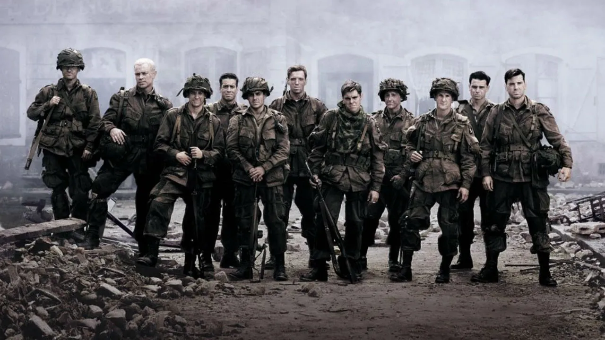

D-Day

Band of Brothers
Band of Brothers(Easy Company, 2nd Battalion, 506th Parachute Infantry Regiment, 101st Airborne Division) was a group of paratroopers in WW2 that were in multiple large battles such as D-Day. On D-Day they were dropped while it was still dark outside and their main job was to locate and dismantle enemy bunkers and AA(Anti-Air) Guns that would fire against the asaulting forces on the beaches. Because, of the horrible techniques during this period for parachuting where they would drop their gear out the plane before they jumped many lost thier gear minus the Thomson SMG(Sub machine gun) and pistol with them. They were also split apart as there was no good way of keeping close together and maneuvering towards your teammates. In the end though after most of the group found each other they made several attacks at AA batteries and MG(Machine Gun) bunkers and positions to where they were able to put a big dent in the German defense.
Battle of the Bulge
So they were also deployed into the battle of the bulge which was a major allied push where some of the troops were trapped and surrounded by German forces when they pushed ahead of the main force and didn't fall back on orders(if i remember right this is what happened). Easy was one of the units their and fought extremely hard to defend the allied position as long as possible until support came. They were also extremely low on ammo and other essential supplies(grenades, dry socks, food, etc.).
Market Garden
They were also at some other things like Operation Market Garden which was a operation that was a surprise paratrooper attack in France(I think) as a shock and awe style attack to confuse the Germans. Lets just say that the Germans were not shocked and eliminated a lot of American soldiers during Market Garden. Most of Easy survived Market Garden and sustained a few casualties overall and didn't lose to many men.
Other Stuff
There was also a mission where they were supposed to hold a barn house from a large group of German forces up in France. During this they sustained a few casualties(Killed in action, Missing in action, wounded in action), one of which was when one of their own guys was going to wake up his replacment for gaurd duty for the next however many hours and the guy who was supposed to replace him thought he was a german and stabbed him with his rifle bayonet. The guy ended up being fine other than a large cut in his abdomen. Another guy was shot through the neck by a German and since they thought he was dead they left him their til the firefight ended and they realized he was alive. In the end though they got him back safely and he was fine and kept fighting with Easy throught the rest of the war. Another cool thing is the CO(Commanding Officer) of Easy company wasn't a FOBbit(Officer who sits around in a Forward Operating Base while his soldiers die on the front lines, derived from the Lord of The Rings) and he fought with his soldiers on the front line and put himself in more danger than he put the rest of the unit in. There was one instance where when they pushed up the road of a french city he instead of hiding back in trenches with his soldiers he would get up in the fight from a tiny foxhole and shoot at the Germans til they fled.